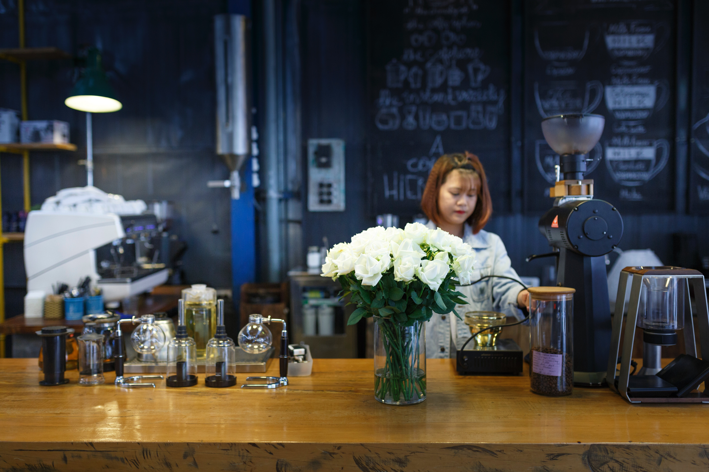

¡Nuestro nuevo Café está aquí!
Estamos muy emocionados de anunciar que finalmente estamos por abrir nuestro café en el corazón de Ciudad de Cordóba. El equipo de Hellocoffe ha estado trabajando en esto durante años. Sabíamos que un antiguo edificio que era una fabrica textil sería el hogar perfecto para una cafetería. La transitabilidad del centro histórico, el detalle arquitectónico y la iluminación natural son elementos que buscamos para crear un nuevo espacio para que disfrutes de nuestro café. La pandemia generó importantes desafíos. Las restricciones de Covid, los problemas de la cadena de suministro y la escasez de mano de obra crearon obstáculos únicos y retrasos significativos. Pero nuestro equipo ha sido positivo e increíblemente resistente. Todos han trabajado duro para ofrecer un nuevo y hermoso café. Aunque todavía se necesitan algunos retoques, abriremos nuestras puertas este mes de Noviembre de 12 a 6. Durante las próximas semanas agregaremos los pulidos finales y celebraremos con una Gran Inauguración en algún momento del mes de Diciembre. Estén atentos a nuestras redes sociales para más actualizaciones. Nuevamente, estamos entusiasmados con esta nueva ubicación y otra oportunidad de crear una comunidad de café. Esperamos verte pronto. Salud, Edgar Rivero.
